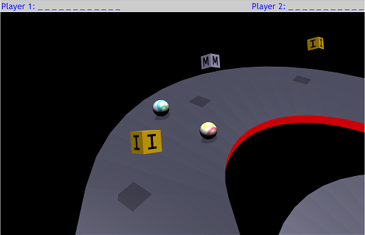

Welcome to korokoro word hunt!
Objective
'korokoro word hunt' is a 2-player game.
Each player gives a secret word to his/her opponent,
and each player hunts the given word.
How to play
The play screen looks like this:

You (and your opponent) need to move the marbles to left or right, or jump to hit the letters.
| Gamepads (Logitech F710, F310) | Keyboard - Player 1 | Player 2 |
| Move to left: | [Left] button | 10 key [1] | [A] |
| Move to right: | [Right] button | 10 key [3] | [D] |
| Jump: | [Y] button | 10 key [5] | [W] |
| Jump to left: | [X] button | 10 key [4] | [Q] |
| Jump to right: | [B] button | 10 key [6] | [E] |
Click here to play.
To play with (psuedo) randomly picked words,
click here (theme: fastfood), or
click here (theme: C++ algorithm).
Something to know
- The marbles travel forward automatically
(You have no control, so that you and your opponent will always be side-by-side.
It also means you can bump your opponent to sabotage him/her if you wish...)
- Auto picked words may not be fair... i.e. one might get a word with 5 letters,
and another might get a word with 10 letters.
- The length of words may be served as 'handycap'...